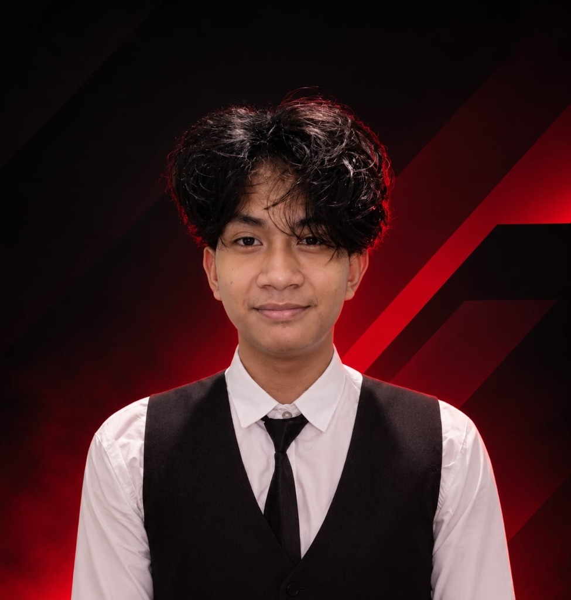

01
IT Support Intern
Dinas Komunikasi dan Informasi Amuntai
- Menganalisis data dan memantau kinerja di lapangan
- Merancang pembuatan rencana anggaran belanja
- Memimpin pelaksanaan pembangunan
Muhammad Hafizul Fahmi — Fahmi
Berorientasi pada hasil.
Siap berkarya di dunia nyata.

IT Support · Diskominfo Amuntai
Desain & Perancangan · LZ Computer
Perencanaan RAB · Diskominfo & LZ
Freelance Visual Production
Hardware & D4 RKJ Politala
Pelaksanaan Lapangan & Toko Madya
Menggabungkan latar belakang D4 Rekayasa Komputer dan Jaringan di Politeknik Negeri Tanah Laut dengan pengalaman lapangan di bidang IT Support, teknisi komputer, desain, serta produksi visual.
Pelajari Lebih →const fahmiProfile = () => {
return {
nickname: "Fahmi",
fullName: "Muhammad Hafizul Fahmi",
campus: "Politeknik Negeri Tanah Laut",
major: "D4 Rekayasa Komputer & Jaringan",
languages: ["Indonesia", "English"],
status: "Available"
};
};Mini game web interaktif buatan iseng — klik kartu ini untuk langsung meluncur dan memainkannya di browser.
Eksperimen seru berikutnya sedang diracik di balik layar. Tunggu kehadirannya segera!
Saya Muhammad Hafizul Fahmi (akrab disapa Fahmi), Mahasiswa D4 Rekayasa Komputer dan Jaringan dari Politeknik Negeri Tanah Laut (POLITALA).
Saya berpengalaman di berbagai acara dan bidang yang saya minati — mulai dari magang IT Support di instansi pemerintahan, teknisi komputer, staf operasional, hingga freelance fotografer dan videographer. Berorientasi pada hasil dan mampu bekerja di bawah tekanan.
D4 Rekayasa Komputer dan Jaringan
Pendidikan Menengah Kejuruan
Madrasah Tsanawiyah
Madrasah Ibtidaiyah
Mengumpulkan data lapangan, memantau kinerja, dan mengidentifikasi kebutuhan utama.
Menyusun rencana anggaran belanja dan rancangan teknis secara terstruktur.
Membuat rancangan visual, gambar denah, atau konsep produksi dengan software desain.
Memimpin dan mengeksekusi pekerjaan lapangan, instalasi teknis, atau dokumentasi acara.
Memastikan kualitas akhir tercapai tepat waktu, rapi, dan siap digunakan.
"Berorientasi pada hasil, adaptif di berbagai bidang, dan siap bekerja maksimal di bawah tekanan."
Menempuh pendidikan dasar di Amuntai sekaligus menumbuhkan kedisiplinan dan ketertarikan pada hal-hal teknis dan kreatif.
Mengembangkan kemampuan komunikasi aktif dalam bahasa Indonesia dan Inggris serta ketertarikan pada desain dan teknologi.
Memperoleh pengalaman langsung sebagai IT Support Intern di Dinas Komunikasi dan Informasi Amuntai, Computer Technician Intern di LZ Computer Amuntai, Staf Operasional di Toko Madya Amuntai, serta aktif sebagai Freelance Fotografer & Videographer.
Melanjutkan pendidikan di program D4 Rekayasa Komputer dan Jaringan. Siap berkolaborasi, berkarya, dan memberikan kontribusi nyata.
Butuh dukungan IT, teknisi komputer, desain, atau dokumentasi foto & video?
Hubungi Fahmi — selalu terbuka untuk kolaborasi dan kesempatan baru.